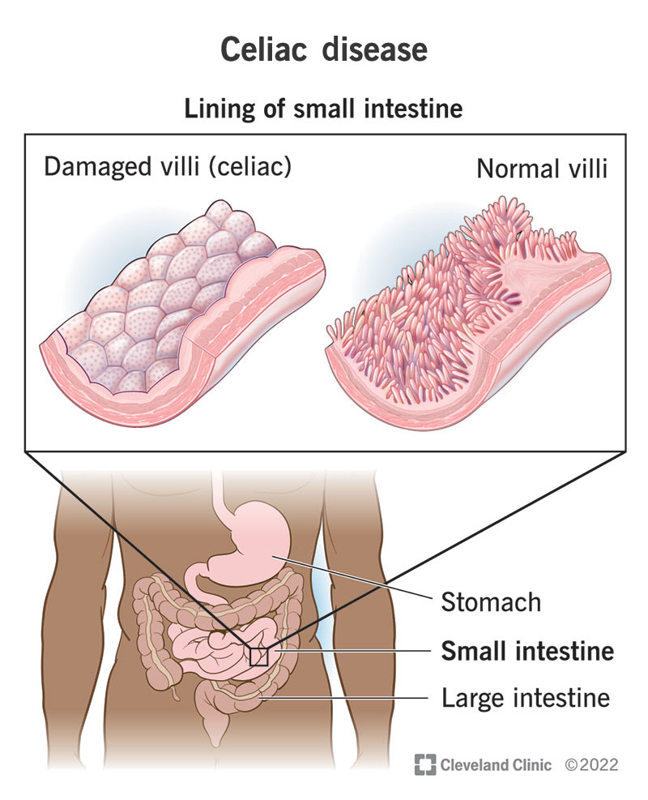

Celiac Disease is a condition where the immune system reacts to protein called gluten. When someone with celiac disease eats gluten it triggers an abnormal response from your immune system. Your immune system then attacks the gluten in your digestive system causing inflammation. This inflammation damages the inside of your small intestine
Causes:
Research shows that Celiac disease is caused by a change in 2 specific genes.Some experts believe by existing problems such as bacteria or infections in the digestive tract or surgery. Symptoms can appear at any age such as babies of 8-12 months or people between 40-60.
Short Term Symptoms
Abdominal bloating and pain
Constipation
Diarrhea
Headaches
Nausea and vomiting
Mouth ulcers
Long Term Symptoms
Unusual weight loss
Missed periods(late puberty)
Itchy,blastery,skin rash
iron-deficiency anemia
Depression and anxiety
Infertility
What physical, emotional, and psychological impacts does this disease/condition have on individuals who have it?
Psychological issues
p>Moodiness
Overwhelming
Unrestful sleep
Anxiety
Irritabilit
Grumpiness in adults
Temper tantrums in children
Fear of food
Scarcity mindset about food and bingeing
Emotional
Finding little pleasure in life
Crying for no reason
Big mood swings
Very low energy
Easily irritated or angry
A change in eating or sleeping patterns
Wanting to harm yourself or someone else
Hearing voices
Losing interest in hobbies
Physical
Abdominal pain
Bloating
Excess Gas
Headaches
Unexpected Weight loss
Nausea and vomiting
fatigue
How does Celiac disease impact other body systems ?
This disease mainly impacts the small intestine. The attack of gluten damages your small intestines lining and prevents it from absorbing nutrients. This condition is called malabsorption .It also causes structural damage to the rely that absorb nutrients when these Villi are damaged the body struggles to absorb essential vitamins, minerals and calories over time this can lead to deficiencies and nutrients and other health issues. It also flattens the Villi causing them to lose their surface area. Some patients also develop mouth ulcers or canker sores as a result of malabsorption.

What are some possible treatments/Medication for Celiac Disease?:
Strict lifelong gluten-free diet is the only way to manage celiac disease.Gluten convenient in Foods medicines and non food products including preservatives, food stabilizers prescription vitamin and mineral supplements toothpaste and mouthwash Play-Doh certain makeup products. by removing gluten from your diet, information in the small intestine will reduce and allow the Villi to heal and absorb vitamins normally. Sometimes steroids are needed to help control inflammation in serious cases.
List three key points on how Celiac Disease can be prevented
These cannot be prevented in any way however small children with family members who carry the disease can be genetically tested at an early age to see if they carry the genes of celiac disease.